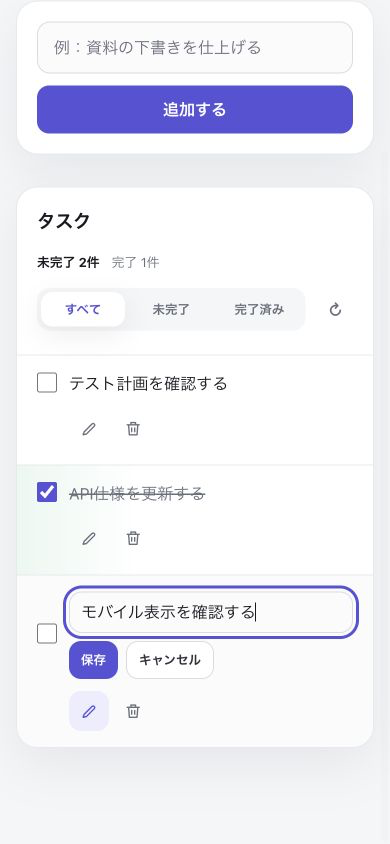
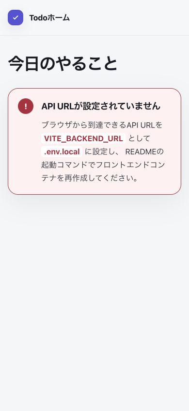

01 空状態
初期取得が成功し、登録済みタスクがない状態です。追加欄、件数、フィルター、更新操作を同じ画面に保ちます。
- 主操作
- タイトル入力／一覧更新
- API
GET /tasks
認証なし Todo Web API を利用する単一画面アプリの主要状態、API 対応、操作フローです。
初期取得が成功し、登録済みタスクがない状態です。追加欄、件数、フィルター、更新操作を同じ画面に保ちます。
GET /tasks
モバイルでは入力欄と追加ボタンを縦に配置します。成功後だけ入力を空にし、最新一覧を再取得します。
POST /tasks → GET /tasks
未完了・完了件数とフィルターを表示し、チェックボックスで完了状態を切り替えます。
PATCH /tasks/{id} → GET /tasks
対象行だけを編集フォームへ切り替えます。保存成功後に一覧を再取得し、失敗時は入力内容を保持します。
PATCH /tasks/{id}/title → GET /tasks
API要求が失敗した状態です。保持できる一覧や入力は残し、同じ操作または一覧更新から再試行します。
GET・POST・PATCH・DELETE
API URL が空または未設定の状態です。タスク操作やローカル代替データは表示せず、READMEの起動コマンドでコンテナを再作成する手順だけを示します。
| 操作 | API / payload | 成功時 | 失敗時 |
|---|---|---|---|
| 初期表示／一覧更新 | GET /tasks | 200 の一覧または空状態 | 通信エラーを表示し、更新で再試行 |
| 追加 | POST /tasks{ "title": "..." } | 201 後に一覧を再取得 | 入力を保持してエラー表示 |
| 完了状態を切替 | PATCH /tasks/{id}{ "completed": true | false } | 200 後に一覧を再取得 | 表示状態を変えずにエラー表示 |
| タイトルを保存 | PATCH /tasks/{id}/title{ "title": "..." } | 200 後に一覧を再取得し編集終了 | 編集内容を保持してエラー表示 |
| 削除 | DELETE /tasks/{id} | 204 後に一覧を再取得 | 一覧を保持してエラー表示 |